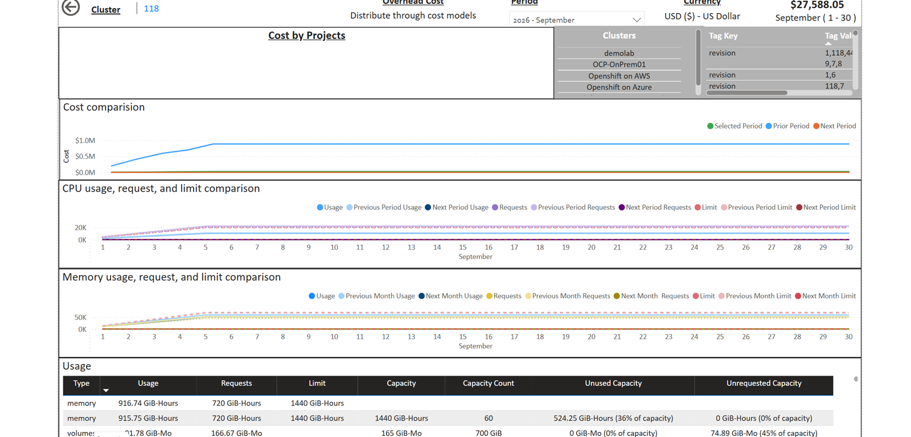
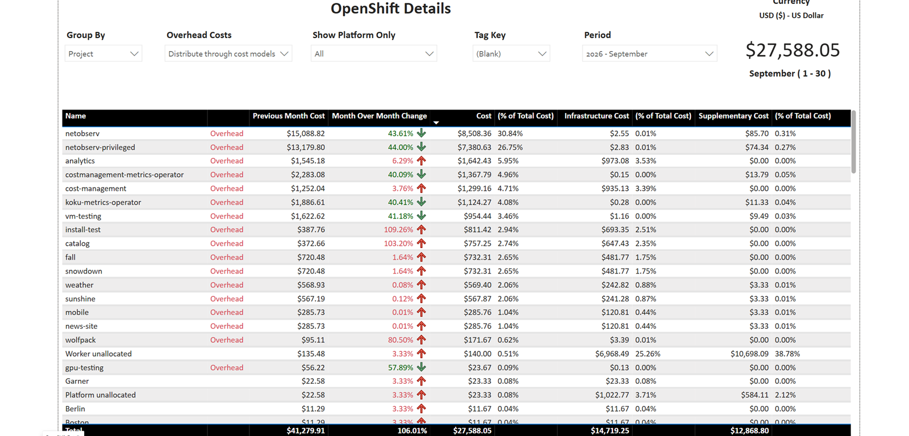
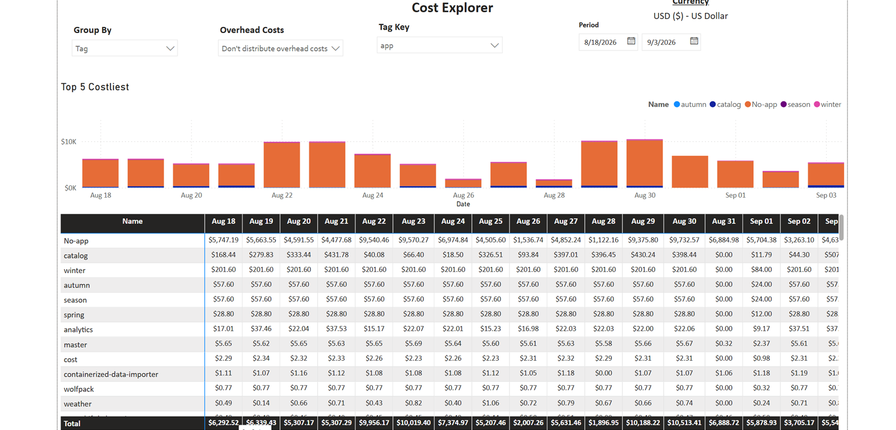
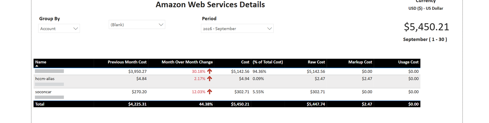
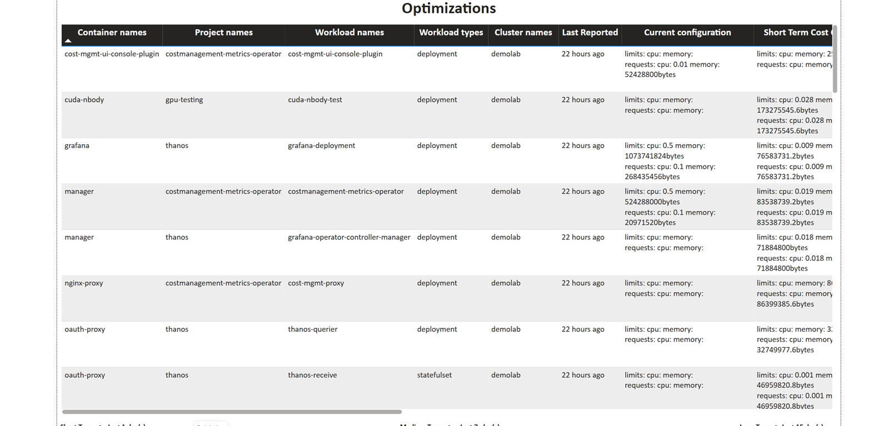

A sample report for FinOps. Windows PowerShell 5.1 downloads Cost Management data to CSV. Power BI Desktop reads those files.

Features
The loader talks to the Cost Management API. The report keeps its pages, measures, and calculated tables, and imports the CSV files.
Windows PowerShell 5.1 downloads JSON and writes one CSV per dataset. There is no second loader and no database.
The defaults are console.redhat.com and the Red Hat SSO token endpoint. A self-managed service passes its own API host and Keycloak token URL.
Daily cost by project, cluster, node, and tag, plus CPU, memory, and volume usage. Overhead can stay undistributed or be distributed through cost models.
One cost file feeds Group By for account, service, region, tag, cost category, and organization. The Key dropdown lists the tag, category, or org unit.
The Optimizations page lists OpenShift recommendations, including short, medium, and long term cost and duration in hours.
OpenShift Details, Cost overview, and Amazon Web Services share one month. Currency is the account currency, shown as a label with its name and symbol.
Report
The screenshots below are from a demo account. AWS account numbers are hidden.
| Page | What it shows |
|---|---|
| Cost overview | Projects, clusters, and tags, with CPU, memory, and volume usage against requests, limits, and capacity. |
| OpenShift Details | OpenShift grouped by project, cluster, node, or tag, with infrastructure cost, supplementary cost, and month-over-month change. |
| Cost Explorer | Daily cost for a start and end date, and the leading names for the selected group. |
| Amazon Web Services | AWS grouped by account, service, region, tag, cost category, or organization. |
| Optimizations | OpenShift recommendations for the workloads in the export. |
Screenshots
Click a screenshot to enlarge it.




Export
You need Windows PowerShell 5.1, Power BI Desktop, and a Cost Management service account. The client secret stays in data/auth.csv, which is not committed.
Copy auth.csv.sample to data/auth.csv and replace the sample client id and client secret.
-TestProxy does not read auth.csv. -Test checks the proxy first, then requests a token. Neither command prints the client secret, the access token, or proxy credentials.
powershell.exe -File scripts/Export-CostManagement.ps1 -TestProxy powershell.exe -File scripts/Export-CostManagement.ps1 -Test
SaaS uses console.redhat.com. A self-managed Cost Management passes -ApiBaseUrl and -TokenUrl. CSV files land in data/export/. The script exits 0 only when every requested dataset succeeds.
powershell.exe -File scripts/Export-CostManagement.ps1 -StartDate 2026-08-01 -EndDate 2026-09-30
powershell.exe -File scripts/Export-CostManagement.ps1 -TokenUrl https://keycloak.example.com/token -ApiBaseUrl https://cost.example.com
Open PowerBI/CostManagement.pbix and refresh it after the export exits 0. Queries read DataFolder\export and DataFolder\static. Before the first refresh, set DataFolder to this clone's data directory.